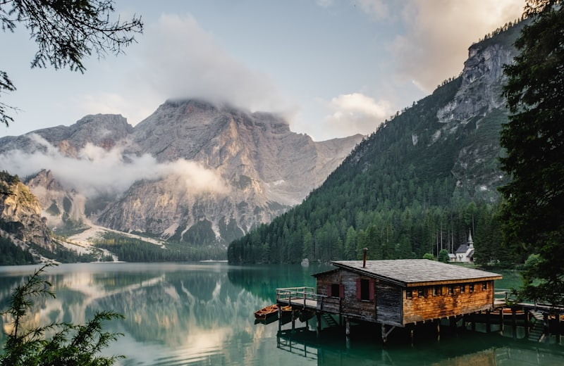
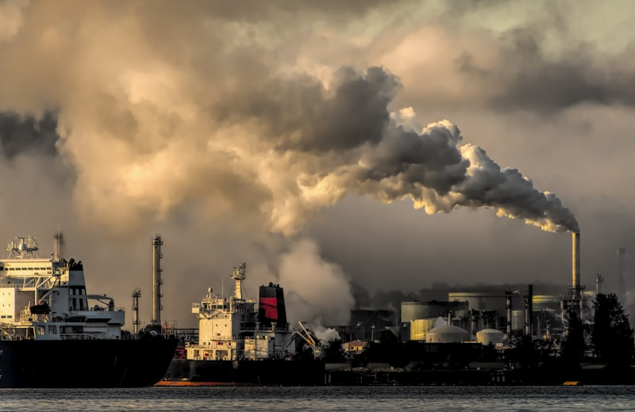
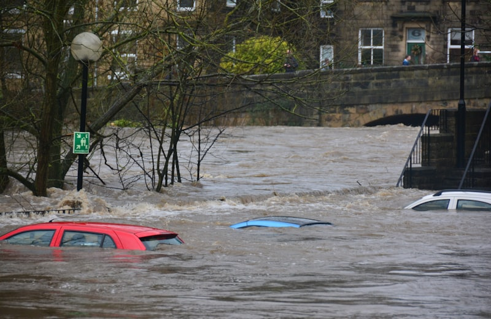
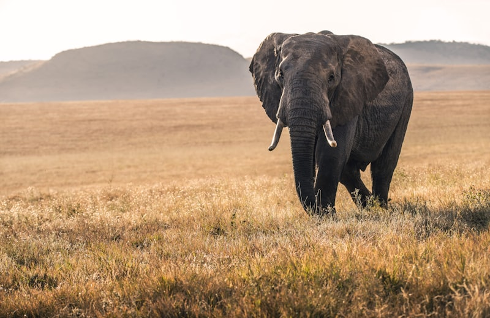

Gases Estufa
Aquecimento Global
O aumento da temperatura média da Terra devido à queima de combustíveis fósseis e desmatamento. Causa o derretimento das geleiras e eventos climáticos extremos.

As questões ambientais contemporâneas são o reflexo da nossa relação com o planeta. Desde o aquecimento global até a poluição dos oceanos, estamos enfrentando desafios que exigem mudanças profundas. No ENEM, é fundamental entender como esses processos funcionam e quais são as suas consequências para a humanidade e para todos os seres vivos.

As marcas da atividade industrial na natureza.

O aumento da temperatura média da Terra devido à queima de combustíveis fósseis e desmatamento. Causa o derretimento das geleiras e eventos climáticos extremos.

Apenas 3% da água da Terra é doce. O desperdício e a poluição de rios e aquíferos colocam em risco o abastecimento de bilhões de pessoas no mundo todo.

A destruição de habitats naturais leva à extinção de espécies animais e vegetais, quebrando o equilíbrio delicado dos ecossistemas fundamentais para nós.
Tanto a Chuva Ácida originada no excesso de queima do combustível fóssil dos pólos industriais com ventos atmosféricos carregados com SO² e NO², quanto a destruição e rarefeição do manto de gás Ozônio por influência histórica de CFCs, indicam que impactos gerados localmente tomam proporções mundiais ou vizinhas. O Efeito Estufa é, primordialmente, um fenômeno amável à vida que retém o calor infravermelho, o malefício consiste num exacerbado acúmulo sintético provocado pelos desmatamentos que acentua em progressão perigosa essa temperatura (Aquecimento Global).
Dois novos estudos mostram que a água morna dos oceanos está corroendo a base da camada de gelo, em um processo que não pode mais ser interrompido O derretimento das geleiras da Antártida Ocidental está avançando de forma gradual e "irrefreável", afirmaram dois novos estudos científicos. De acordo com os levantamentos, o derretimento que já começou não deve ter efeitos imediatos nos oceanos, mas poderá adicionar até 3,6 metros ao nível do mar nos próximos séculos, um ritmo de elevação mais rápido do que o previsto anteriormente.
Os resultados dos estudos foram divulgados em uma entrevista coletiva convocada pela Nasa nesta segunda-feira. Os pesquisadores afirmaram que é provável que o derretimento ocorra por causa do aquecimento global provocado pelo homem e pelo buraco na camada de ozônio, que mudaram os ventos da Antártida e aqueceram a água que corrói as bases do gelo. Fatores naturais, no entanto, também podem estar entre as causas, acrescentaram os cientistas.
Em um dos estudos, a agência espacial americana analisou 40 anos de dados de solo, aviões e de satélite sobre o que os pesquisadores chamam de "o ponto fraco da Antártida Ocidental" que mostram que o colapso das geleiras da região está sendo provocado pela água morna do oceano que se infiltra por baixo da camada de gelo, acelerando o seu derretimento. "Parece estar acontecendo rapidamente", disse o glaciologista da Universidade de Washington, Ian Joughin, autor de um dos levantamentos.
`Reação em cadeia' Outro cientista envolvido nas pesquisas classificou o processo como "irrefreável" e explicou que nenhuma ação humana ou mudança climática poderá deter o derretimento, embora ele possa ser reduzido. "O sistema está em uma espécie de reação em cadeia que é irrefreável", disse o glaciologista da Nasa, Eric Rignot, principal autor de um dos estudos. "Cada processo nesta reação está alimentando o próximo." Segundo ele, limitar as emissões de combustíveis fósseis para reduzir a mudança climática provavelmente não irá parar o derretimento, mas pode diminuir a velocidade do problema.
Fonte: Veja.com/Ciência, 13 maio 2014. Disponível em:
Geografia Sugestões de Leituras ANGELO, Cláudio. O aquecimento global. São Paulo: Publifolha, 2008.
PEARCE, Fred. O aquecimento global: causas e efeitos de um mundo mais quente. São Paulo: Publifolha, 2002. (Série Mais Ciência).
Sugestões de Vídeos A ÚLTIMA hora. Direção de Leila Conners Peterson, Nádia Conners. EUA, 2007. Duração: 95 min.
O DIA depois de amanhã. Direção de Roland Emmerich. EUA, 2004. Duração: 124 min.